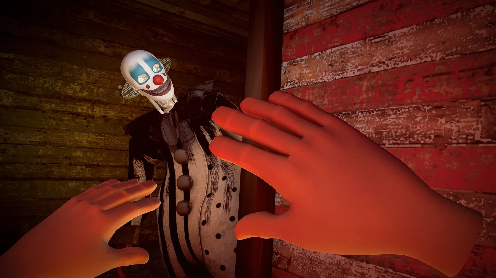
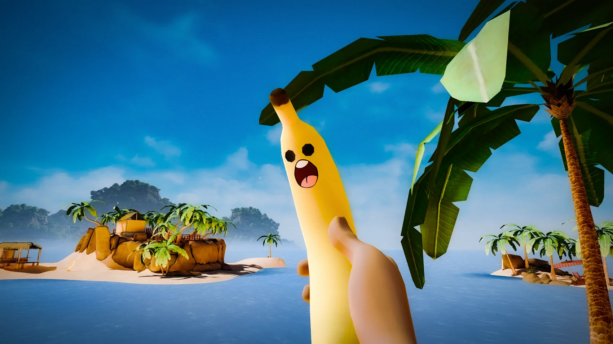

LAUGH. JUMP.SCREAM.
NOPE CHALLENGE is a VR and mixed reality game for Meta Quest. Face towering heights, crawling terrors, and robotic murder clowns. When it gets too much, hit the NOPE Button.
4.6 / 5ON META QUEST ↗EVERYONE HAS
A BREAKING POINT.
Explore ten unique NOPE CHALLENGES: nine VR experiences across Clowns, Heights, and Spiders, plus the mixed reality REALITY BREACH.
Choose Light, Moderate, or EXTREME intensity. Everyone reacts differently. And while most say clowns aren’t scary, our player data shows Dioko makes people NOPE out fastest.
TEN CHALLENGES.
FIND YOUR LIMIT.
Nine VR challenges across Clowns, Heights, and Spiders, plus Reality Breach in mixed reality. Ten challenges in total. Explore the VR challenges below, each with Light, Moderate, and EXTREME intensity.

SEND IN
THE CLOWNS.
Meet the robotic performers who are absolutely not here to make you laugh. Keep moving, stay alert, and whatever you do, don't let Dioko get too close.
YOUR ROOM.
THEIR RULES.
Welcome, Test Subject. The prototype NOPE Core was built to amplify fear. Now it’s unstable and collapsing into your real space. Defend it from robotic clowns and crawling horrors. If things glitch, blame the breach.
TOO MUCH?
JUST NOPE.
One button. Instant escape. When the nightmare gets out of hand, hit the NOPE Button and retreat to the Breather Space.
Recover with Mr. Peels and Coco, whom you rescue from their own phobias. Catch your breath before diving back in.
GET BACK IN THERE ↗
PAUSED ✓
LOOKS FUN.
UNTIL IT'S YOU.
Some moments from inside the experiment. Your headset won't feel nearly as safe as your screen.
ACTUAL PLAYERS. ACTUAL PANIC.
THEY SAID NOPE.
THEY LOVED IT.
““Brilliant to watch people play it.”
““This game was absolutely amazing.”
““the third level was really scary for me”
Clowns, spiders, heights — everyone has a different breaking point.
MORE PLAYER REACTIONS ↗YOUR TURN
TO NOPE.
Laugh, jump, or scream. It’s all part of the fun.
GET NOPE CHALLENGE ON META QUEST ↗